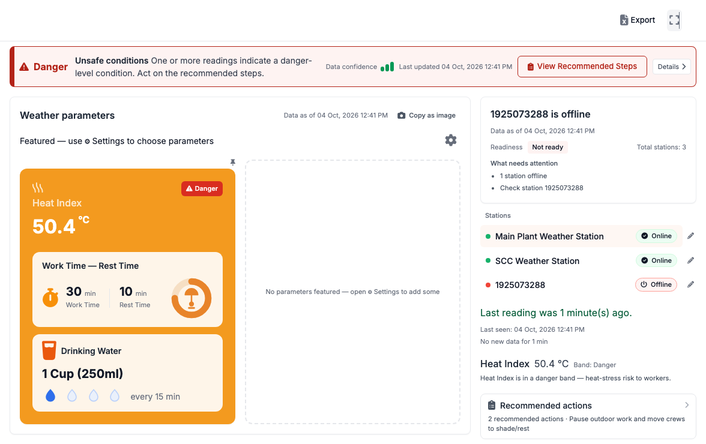
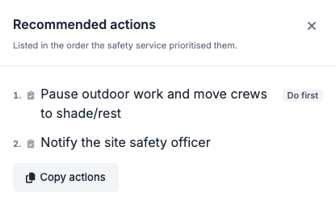
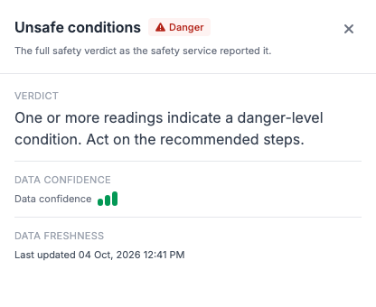
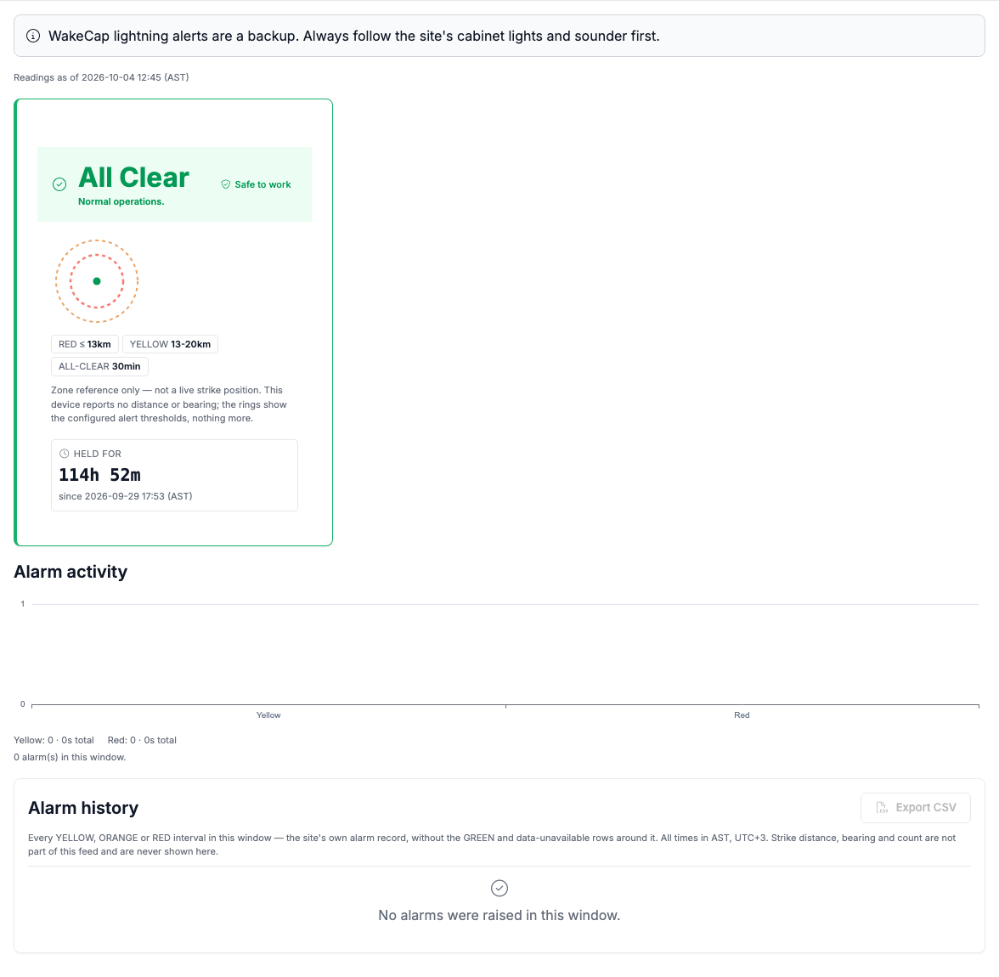
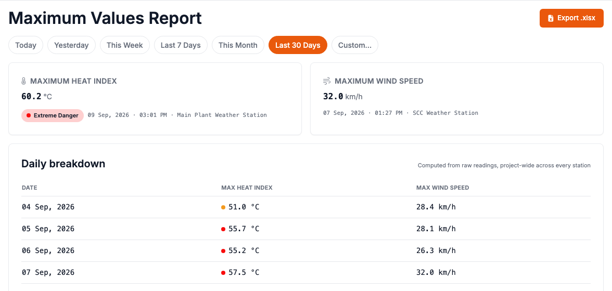
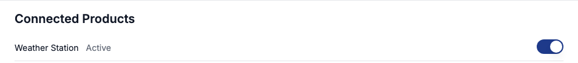
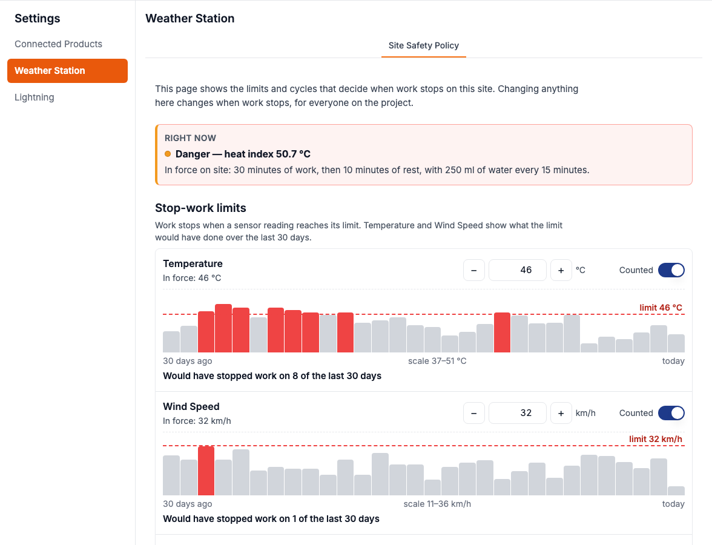
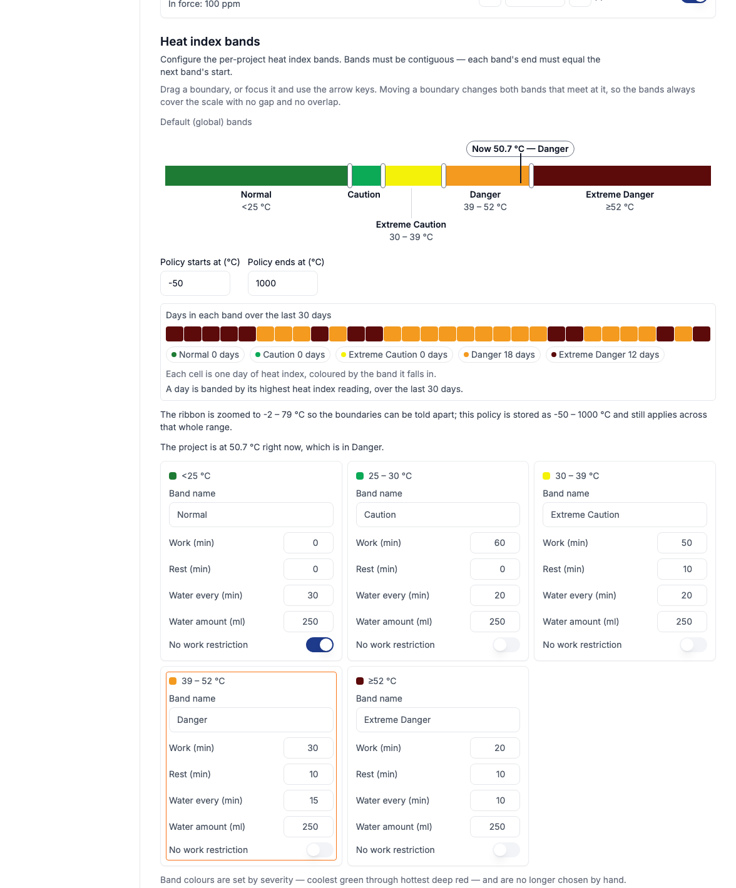
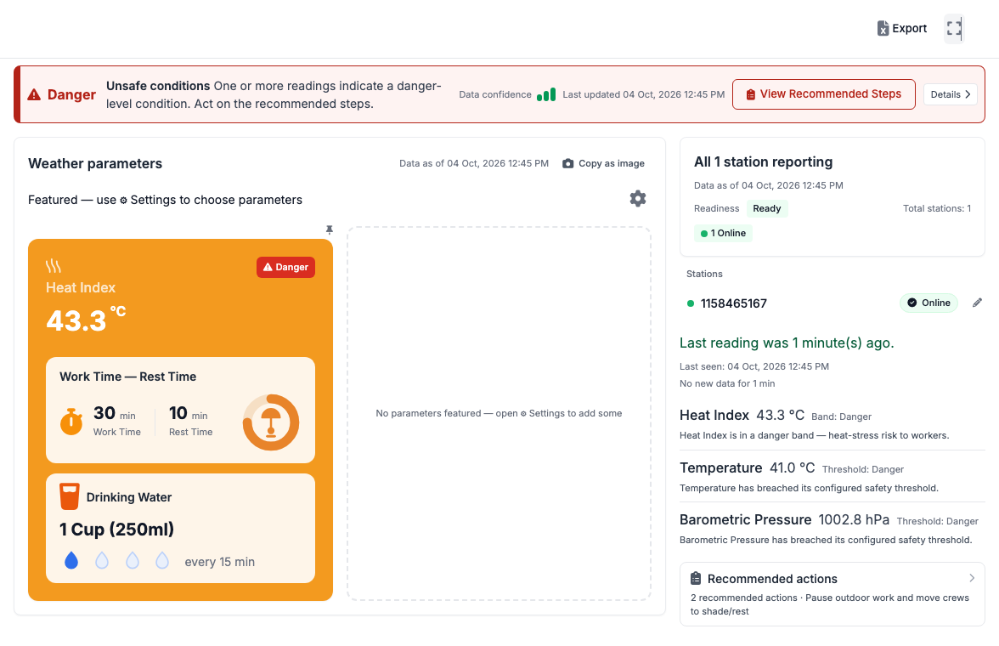

Connected Environment answers first. Open a project, read the verdict and what to do about it, then check the numbers behind it. Heat and lightning for the site, in one place inside the portal your teams already use.
The page opens on the verdict and the next step, not a wall of numbers.[portal: 2026-10-04 live]
A device that is offline, faulty, stale or unknown is never shown as safe.[spec]
The site Safety Policy has a Change history on the Settings page.[portal: 2026-10-04 live]
[spec][spec]Find it in the portal's left rail, under Connected Environment.[portal: 2026-10-04 live] Access follows the view and edit permissions the project already has.[spec]
Live readings and a heat index with work, rest and drinking-water guidance. The verdict comes first.[portal: 2026-10-04 live]
Status per device with its alert zones, an alarm history and CSV export.[portal: 2026-10-04 live]
A Maximum Values Report for the period you pick, with a daily breakdown and an Excel export.[portal: 2026-10-04 live]
Which products are switched on for the project, and the Safety Policy: limits, heat-index bands and a change history.[portal: 2026-10-04 live]

Weather Station, read-only capture, 4 Oct 2026, 12:41 PM AST.
[portal: 2026-10-04 live][portal: 2026-10-04 live][portal: 2026-10-04 live]

View Recommended Steps (left) and Details (right).
[portal: 2026-10-04 live][FE-observation]
Lightning, read-only capture, 4 Oct 2026, 12:45 PM AST. One site label is redacted.
[portal: 2026-10-04 live][portal: 2026-10-04 live][portal: 2026-10-04 live][FE-observation]
Reports, last 30 days, 4 Oct 2026, 12:42 PM AST.
[portal: 2026-10-04 live][portal: 2026-10-04 live][portal: 2026-10-04 live]


Settings: Connected Products and Site Safety Policy. Nothing was edited or saved.
[portal: 2026-10-04 live][portal: 2026-10-04 live][portal: 2026-10-04 live][portal: 2026-10-04 live][FE-observation]
A second project, read-only capture, 4 Oct 2026, 12:45 PM AST.
[portal: 2026-10-04 live][portal: 2026-10-04 live][spec][spec][spec][FE-observation][FE-observation][FE-observation][FE-observation][portal: 2026-10-04 live][portal: 2026-10-04 live][inferred][inferred]Roles only, no names. Every row is a hypothesis for review before use. Sequence is the order to engage.
| # | Role | Cares about | Approach | May resist | Disarm |
|---|---|---|---|---|---|
| 1 | Site HSE lead customer · primary |
Hypothesis: a defensible reason to stop work, fresh data, a record an auditor accepts.[inferred] |
Hypothesis: show their own project live. Lead with the offline-station case and the steps drawer. Plain words.[inferred] |
Hypothesis: distrusts a screen over their own judgement and the site's cabinet lights and sounder.[inferred] |
Hypothesis: reframe as a backup. The Lightning page already says so.[inferred] |
| 2 | Project or site manager customer · primary |
Hypothesis: schedule, cost of stopped work, visibility across the site.[inferred] |
Hypothesis: Reports page and the Safety Policy 30-day preview, after the HSE lead has used it.[inferred] |
Hypothesis: stop-work days cost output, so they may push to loosen limits.[inferred] |
Hypothesis: show what a limit would have done before it changes. Changes are kept in Change history.[inferred] |
| 3 | Supervisors, foremen, crew leads customer |
Hypothesis: finishing the shift, clear instructions.[inferred] |
Hypothesis: reach them through the HSE lead, with the steps list.[inferred] |
Hypothesis: rest cycles interrupt work, so they may dispute the verdict.[inferred] |
Hypothesis: the cycles are the site's own policy in force, mandated by management.[inferred] |
| 4 | Instrumentation or maintenance team customer |
Hypothesis: not being blamed for offline stations.[inferred] |
Hypothesis: engage after the pilot starts.[inferred] |
Hypothesis: passive. Offline devices are now named on the page.[inferred] |
Hypothesis: accept it. Frame the flag as a work list, not a fault report.[inferred] |
| 5 | WakeCap field engineers internal · champion |
Hypothesis: a demo that works on real data, no surprises from empty states.[inferred] |
Hypothesis: this brief plus the walkthrough video. Know the empty states first.[inferred] |
Hypothesis: may avoid parts that show Planned or empty.[inferred] |
Hypothesis: accept. Say what is live and what is not.[inferred] |
| 6 | WakeCap sales internal |
Hypothesis: a story with proof they can repeat without overclaiming.[inferred] |
Hypothesis: use the clean page and the release note only.[inferred] |
Hypothesis: wants to pitch what is not live yet.[inferred] |
Hypothesis: reframe. The page lists only what is live today.[inferred] |
| 7 | WakeCap leadership internal |
Hypothesis: one shell for several products, pilot readiness, no false-safe incident.[inferred] |
Hypothesis: the gaps list below, then the demo video.[inferred] |
Hypothesis: concern that "never falsely safe" is a promise we must keep.[inferred] |
Hypothesis: accept and show which states were not observed live.[inferred] |
Hypotheses, roles only. Routing says where each disarm lands: reframe goes to page copy, product change to the proposal, contract to the owner ask, accept to the stakeholder map.
| Party | Active or passive | Specific threat | Disarm | Routing |
|---|---|---|---|---|
| Supervisors and crew leads | Passive[inferred] |
Hypothesis: a Danger verdict brings work and rest cycles (30 min work, 10 min rest in the band checked).[inferred] |
Reframe: the cycles are the site's policy in force.[inferred] | Page copy |
| Anyone who judged heat by feel | Active[inferred] |
Hypothesis: a shared, visible verdict replaces informal calls.[inferred] |
Contract: management mandates the policy and the verdict.[inferred] | Owner ask |
| Device owners | Passive[inferred] |
Hypothesis: offline devices are named on the page.[inferred] |
Accept: engage through the stakeholder map.[inferred] | Stakeholder map |
| Production managers | Active[inferred] |
Hypothesis: "would have stopped work on 8 of 30 days" makes the cost of a limit visible.[inferred] |
Reframe: the same view shows what a limit protects.[inferred] | Page copy |
| Whoever could change limits quietly | Passive[inferred] |
Hypothesis: policy changes are meant to appear in Change history. It was empty on the project checked, so this was not seen working.[inferred] |
Accept: intrinsic to the product.[inferred] | Stakeholder map |
Owner embedding. It lives in the portal's left rail as Connected Environment, one area per project.[portal: 2026-10-04 live] Hypothesis: the Copy as image button gives it a second home in the site's group chat.[inferred]
Excluded from both renders of this page. Reason is what was seen live on 4 Oct 2026 on the six surfaces.
| Item | Why excluded |
|---|---|
| Agent-composed dashboard, dynamic charts, observation drawer | Flag off. The Details drawer shows only verdict, confidence and freshness. No "Why this verdict" or observation text on any page.[FE-observation] |
| History charts (Trends) | Rail shows Trends as Planned and disabled.[portal: 2026-10-04 live] |
| Lightning wallboard and mobile glance | No link from the Lightning page, and not one of the six URLs.[FE-observation] |
| Lightning red alarm flash, non-green states | Only All Clear was visible. Alarm history empty, CSV export disabled.[FE-observation] |
| Version-checked edits, staged publish, loosening gate | Not exercised (read-only). Change history empty on the project checked.[FE-observation] |
| Share image and Excel results | Buttons seen, not clicked (clipboard and downloads).[FE-observation] |
| Other products in the rail, mobile, Arabic, notifications | Out of scope or not visible on the six surfaces.[FE-observation] |